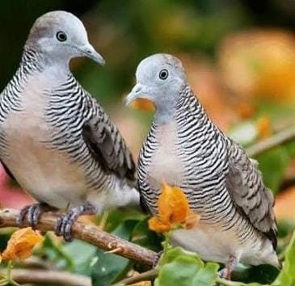
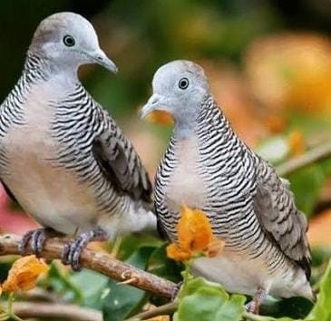

Burung Perkutut Jawa dengan nama latin Geopelia striata bukan hanya burung yang mampu bersuara, akan tetapi burung ini mempunyai beragam keunikan yang tidak dimiliki oleh burung lainnya. Bagi sebagian pemelihara burung. dengan hanya melihat perkutut sudah bisa memastikan bagaimana suara yang akan dihasilkan. Salah satu kebiasaan dari burung ini adalah terbang dan bertengger di kebun atau ladang. Selain itu, mereka juga sering mencari makan di jalan yang jarang dilintasi oleh manusia.
Perkutut Jawa hidup berpasangan atau kelompok kecil. Perkutut jawa makan di permukaan tanah. Kadang mereka berkumpul untuk minum di sumber air. Sarangnya berbentuk datar tipis dan terbuat dari ranting. Telur berwarna putih, Jumlah 2 butir. Perkutut Jawa berbiak pada bulan Januari-September.
Perkutut Jawa hidup berpasangan atau kelompok kecil. Perkutut jawa makan di permukaan tanah. Kadang mereka berkumpul untuk minum di sumber air. Sarangnya berbentuk datar tipis dan terbuat dari ranting. Telur berwarna putih, Jumlah 2 butir. Perkutut Jawa berbiak pada bulan Januari-September.
PROFIL PERKUTUT JAWA
- Burung perkutut Jawa (Geopelia striata) atau dikenal juga sebagai perkutut lokal mempunyai tubuh ramping panjang berukuran sedang, sekitar 20-25 cm, ukuran ekor pendek dengan kepala membulat
- Burung pemakan biji-bijian ini biasanya dipelihara oleh orang Jawa yang mempunyai sebagai burun kicauan karena suaranya yang khas dan dianggap membawa keberuntungan.
- Burung dengan nama latih Geopelia striata bukan hanya burung yang mampu bersuara, akan tetapi burung ini mempunyai beragam keunikan yang tidak dimiliki oleh burung lainnya.
- Burung perkutut di alam memakan rerumputan, benih gulma, dan serangga. Sehingga dimungkinkan di alam mempunyai manfaat sebagai pengontrol alami gulma dan serangga.
CARA BERTERNAK PERKUTUT JAWA
- Pemilihan Bibit
Bibit atau indukan burung perkutut yang akan dibudidayakan haruslah telah berumur ideal yaitu minimal berumur 4 bulan dan sebaiknya betina lebih tua dari jantan. Selain itu pilihlah bibit yang baik agar hasilnya juga baik. - Persiapan Kandang Budidaya
Kandang yang digunakan untuk budidaya biasanya adalah kandang dengan ukuran tinggi bervariasi antara 45-180 cm, lebar 60 cm, panjang antara 100-180 cm, lantainya terbuat dari pasir atau tanah dan atapnya berupa asbes atau genteng. - Proses Perjodohan
Untuk menjodohkan burung perkutut ini, pertama masukkan perkutut yang akan dijodohkan ke dalam kandang ternak pada saat sore hari. Namun perlu diperhatikan sebelum dimasukkan ke dalam kandang ternak kedua perkutut yang akan dijodohkan terlebih dahulu diberikan kacang hijau lunak, miyak ikan, vitamin E, dan badannya dibasahi sedikit. - Tahap Pemeliharaan Anakan
Piyik atau anakan burung yang baru menetas sebaiknya dipisahkan terlebih dahulu dari induknya jika sudah berumur 1-1,5 bulan. Pada usia tersebut, piyik biasanya sudah bisa makan sendiri. Tempatkan piyik dalam sangkar yang memiliki ukuran sekitar 50 cm x 70 cm x 50 cm dengan dalam satu sangkar diletakkan 8 sampai 10 ekor piyik burung perkutut.
GALERI


Tertarik untuk budidaya/memeilhara Perkutut Jawa?
Penawaran Khusus Bagi Anda!
Harga 1 Ekor Perkutut Remaja Rp. 75.000
Sekarang cukup Rp. 50.000 saja!
Berminat hubungi kami di WA - 012455588222